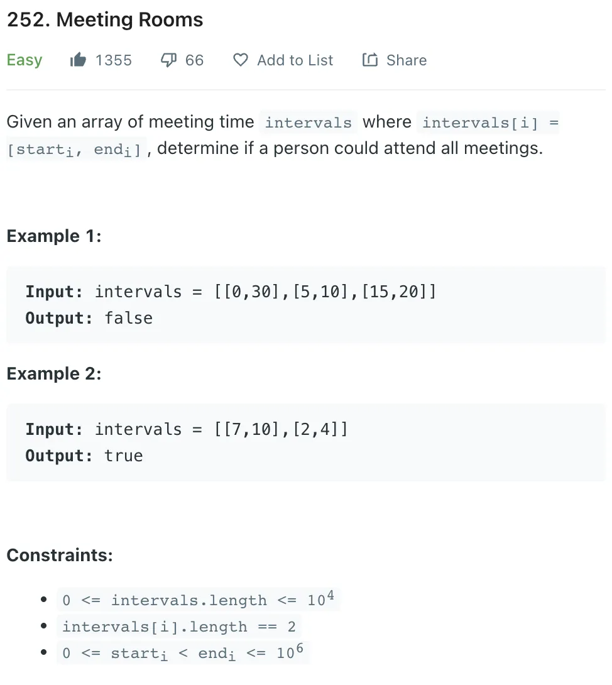
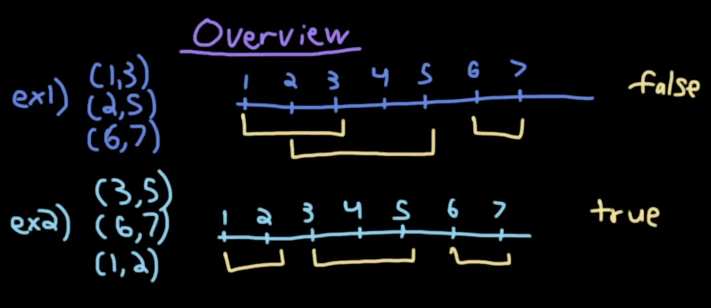
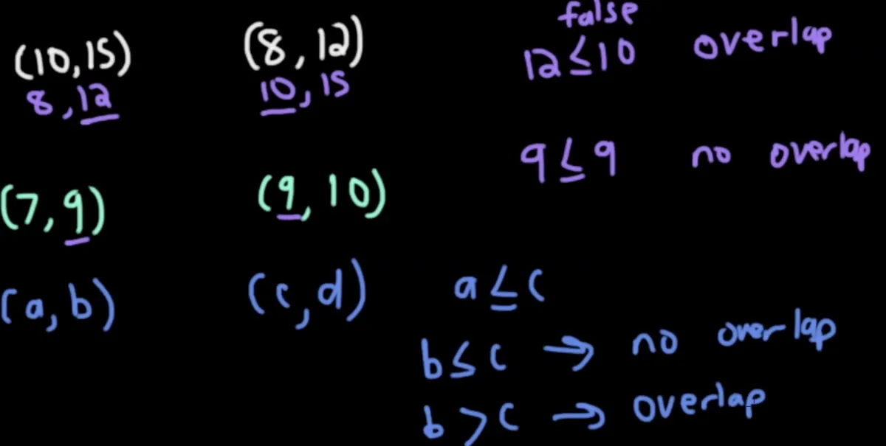

252. Meeting Rooms (會員題)
Question

✍🏽 My Solution
Solution #1 [王爭- 先排序後比較]
Runtime: 8 ms, faster than 57.70% of Java online submissions for Meeting Rooms.
Memory Usage: 45.4 MB, less than 26.04% of Java online submissions for Meeting Rooms.
class Solution {
public boolean canAttendMeetings(int[][] intervals) {
Arrays.sort(intervals, new Comparator<int[]>() {
public int compare(int[] i1, int[] i2) {
return i1[0] - i2[0]; //如果第0列的数字不等，那么按第0列的升序
}
});
for (int i = 1; i < intervals.length; i++) {
// 後面的起始元素 > 前面的結尾元素，代表重複
if (intervals[i][0] < intervals[i-1][1]) return false;
}
return true;
}
}
Explanation (in my words)
- How does their solution work?
- 題意：看每個區間有沒有重疊
- 思路：給所有區間排序，用起始時間的先後來排
- 然後從第二個區間開始，如果開始時間早於前一個區間的結束時間，則說明會議時間有衝突，返回false，遍歷完成後沒有衝突，則返回true
- 我们可以先给所有区间排个序，用起始时间的先后来排，然后从第二个区间开始，如果开始时间早于前一个区间的结束时间，则说明会议时间有冲突，返回 false，遍历完成后没有冲突，则返回 true，参见代码如下：
- What is the space/time complexity of their solution?
- time: O(nlogn)
- space: O(1)
- 額外知識補充

